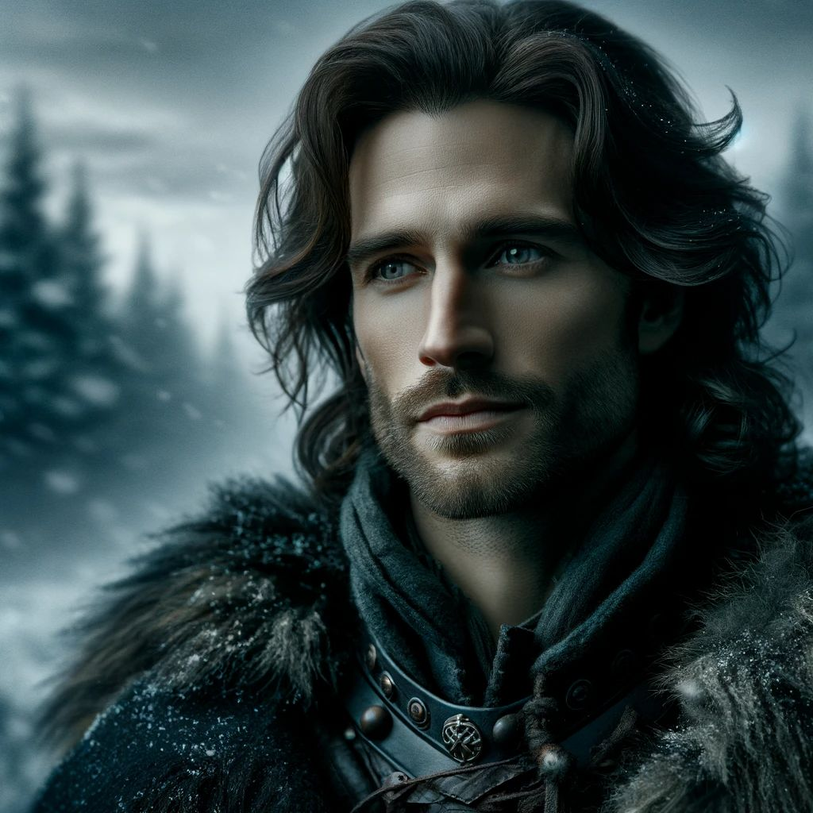
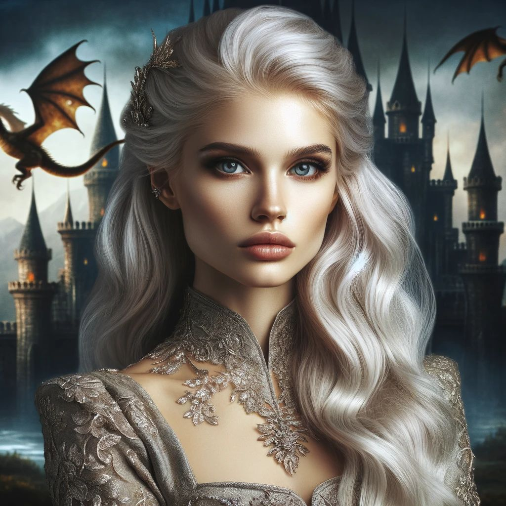
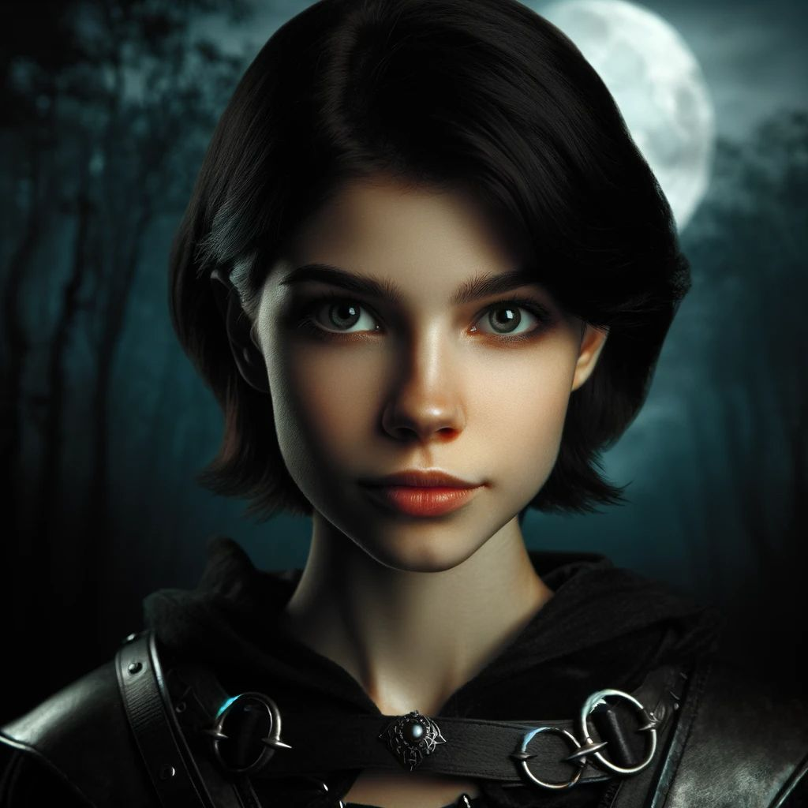
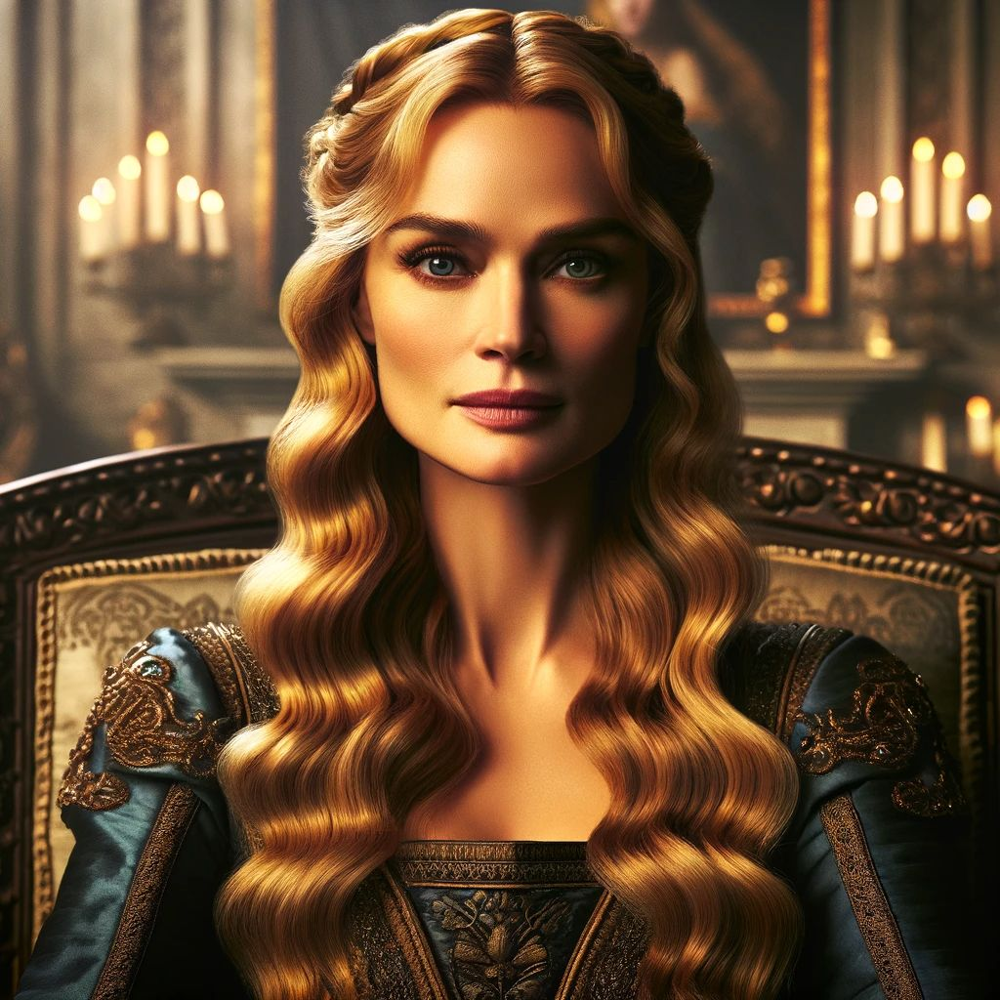

| Jon Snow |
 |
Jon Snow, the solemn and resilient hero of the North in "Game of Thrones," is known for his
unwavering
sense of honor and a strong sense of duty. With his iconic long, curly black hair and a quiet
intensity,
he navigates the complex political landscape of Westeros, driven by a deep desire to protect those
who
cannot protect themselves/td>
|
| Daenerys Targaryen |
 |
Daenerys Targaryen, known as the Mother of Dragons in "Game of Thrones," is a powerful and
charismatic
figure, exuding a blend of regal authority and compassionate strength. With her striking platinum
blonde
hair and unwavering determination, she embarks on a formidable journey, driven by her quest to
reclaim
her ancestral throne and bring justice to those she rules.
|
| Arya Stark |
 |
Arya Stark, the fierce and independent youngest daughter of House Stark in "Game of Thrones," is
known for her resilience and determination to avenge her family. With her adept swordsmanship and
unwavering courage, she defies traditional expectations and embarks on a perilous journey of
self-discovery and retribution. |
| Cersei Lannister |
 |
Cersei Lannister, the formidable and calculating Queen of the Seven Kingdoms in "Game of Thrones,"
is known for her sharp political acumen and unyielding determination to protect her family's power.
With her golden blonde hair and a gaze as cold as the Iron Throne she aspires to keep, Cersei
navigates the treacherous waters of Westerosi politics with a blend of ruthlessness and cunning
unmatched by her peers. |